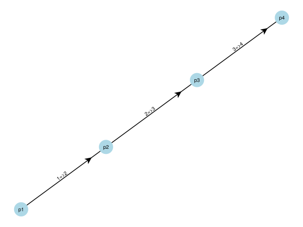

Definition of a GC system
In this segment the structures and function, which are used to define a complex GC system, will be presented.
The structure of a complex GC system consists of four parts:
- Representation of the GC system as a simple directional graph.
- Pressure points defining the pressures at the vertices of the graph (connections of the capillaries).
- Modules defining the features of the capillaries, e.g. dimensions and temperature.
- Additional options, e.g. typ of the mobile phase gas.
(ref to GasChromatographySystems.System)
GC system as a graph
A complex GC system consisting of multiple connected capillaries can be abstracted and represented by a Graph. A Graph $G(V,E)$ is mathematical construct consisting of a set of vertices $V$ and a set of edges $E$, used to represent connections between multiple objects. In the case of the complex GC system the vertices, also called nodes, represent the connections of the capillaries and are related to the inlet and outlet pressures of the capillaries. The edges are the capillaries. A simple directed graph is used. In this context, "simple" means, that each possible connection between vertices exists only once and "directed" means, that edges have direction going from one vertex $i$ to vertex $j$ is different from an edge connecting vertices $j$ and $i$. This is used to represent the preferred flow direction through the capillaries.
The Julia package Graphs.jl is used for the implementation of the simple directed graphs.
In the structure GasChromatographySystems.System(g, pressurepoints, modules, options) the graph is defined in g. For example the graph representing 3 capillaries in series is constructed by
First, a simple directed graph with 4 vertices is defined:
using GasChromatographySystems
g = SimpleDiGraph(4)In following steps the vertices are connected by the edges:
add_edge!(g, 1, 2)
add_edge!(g, 2, 3)
add_edge!(g, 3, 4)This graph can be visualized:
f = GasChromatographySystems.plot_graph(g, ["$(i)=>$(i+1)" for i=1:3], ["p$(i)" for i=1:4])
Pressure points
The vertices $V$ represent the connections of the capillaries of the GC system. To fully define the flow of the mobile phase through the GC system the pressure at these connections must be known or calculated. To store this information about the pressures, two structures are defined. One to define the vertex as pressure point and one to store information about a pressure program.
The first structure is GasChromatographySystems.PressurePoint(name, PP). It is composed of the name of the pressure point resp. vertex and the value of the pressure, either as a number or as a pressure program. The pressure program is defined by the second structure of GasChromatographySystems.PressureProgram(time_steps, pressure_steps), to store the pressure_steps at the times of the corresponding time_steps. In between the time_steps the pressure values are linearly interpolated.
For our example of three capillaries in series we define a pressure program for the inlet pressure, with a pressure of 150000 Pa held for the first two minutes and than increasing the pressure over a time span of ten minutes to 230000 Pa and hold it there for a further minute:
PPin = GasChromatographySystems.PressureProgram([0.0, 120.0, 600.0, 60.0], [150000.0, 150000.0, 230000.0, 230000.0])An array of type GasChromatographySystems.PressurePoint with the length of number of vertices of the graph for our example is created with the defined pressure program for the inlet, a constant pressure of 101300 Pa for the outlet. The pressures in between are unknown and NaN (not a number) will be assigned to these pressure points.
pp = Array{GasChromatographySystems.PressurePoint}(undef, nv(g))
pp[1] = GasChromatographySystems.PressurePoint("p₁", PPin) # inlet
pp[2] = GasChromatographySystems.PressurePoint("p₂", NaN)
pp[3] = GasChromatographySystems.PressurePoint("p₃", NaN)
pp[4] = GasChromatographySystems.PressurePoint("p₄", 101300.0) #outlet